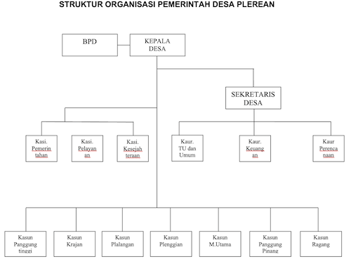

Profil Desa Plerean
Plerean adalah desa di kecamatan Sumberjambe, Jember, Jawa Timur, Indonesia. Desa ini awalnya bernama Desa Plerean ( Pemberhentian ) karna ditengah-tengah alun-alun Desa Plerean Persis di depan pendopo kantor desa Plerenan ada pohon beringin yang sangat besar, disanalah tempat pemberhentian atau peristirahatan orang-orang dari berbagai penjuru Desa.
Bapak Kades bersama tokoh Masyarakat berembuk dan musyawarah Desa Plerean agar dirubah namanya dari Plerenan menjadi Plerean. Adapun kepala desa yang pernah menjabat hingga sekarang adalah sebagai berikut: Nursiha (tahun 1965 s/d 1966), Jahir (tahun 1966 s/d 1969), Murawi (tahun 1969 s/d 1972), Madra’i (tahun 1972 s/d 1976), Sabulla (tahun 1976 s/d 1984), Buhari (tahun 1984 s/d 1992), Barnowo (tahun 1992 s/d 1998), Siti Fatmiati (tahun 1998 s/d 2000), Muracmad (tahun 2000 s/d 2008), Sudahyo (tahun 2008 s.d 2020) BUDIANTO,S.Sos,M.Si (Pj Kepala Desa Tahun 2021) MOCH. ALI MUCHLAS (tahun 2022 saat ini masih menjabat).